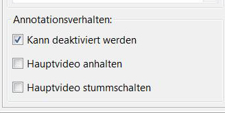

Erstellen von Video-Annotationen
Das Bearbeitungsfenster für Video-Annotationen sieht wie folgt aus:

Anzeigebereich
Mit einem Doppelklick auf den Anzeigebereich öffnet sich ein neues Fenster in dem man die Position und die Größe der Videoannotation
bestimmen kann.
Mittels Doppelklick öffnet sich ein Fenster in dem ein Vorschaubild für die Video-Annotation ausgewählt werden kann.
Dieses Vorschaubild ist fest mit dem Video verbunden. Für jedes Element aus dem Medien-Repository gibt es nur ein Vorschaubild.
Außerdem können weitere Einstellungen für die Wiedergabe der Audiodatei aktiviert oder deaktiviert werden. Das Hauptvideo
kann stummgestalten werden.

Für weitere Details siehe:
"Erstellen von Annotationen"